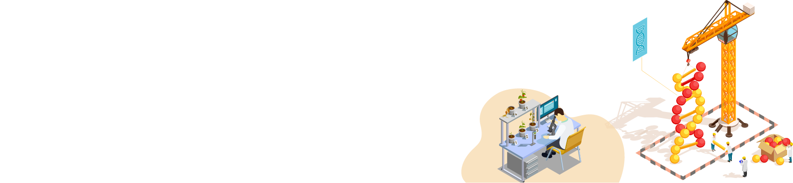

All of us know the perils of eating unhealthy food. But, how aware are we when it comes to the fact that the approach towards fresh food is as important as adding healthy foods to your diet?
FnC Mart is an inventive entrepreneurial venture which brings to you a complete supply of fresh and nutritious food products and is a meticulous endeavour aimed at establishing a clear flow of products and cash between farmers, customers & various stakeholders.
It also aims to upgrade the traditional architecture, and improve farming techniques through Blockchain and IoT to ensure more productivity and assist farmers to make smart decisions.
We play an integral role in rendering a healthy life for all and ensure transparency in the supply chain!